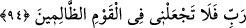
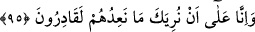
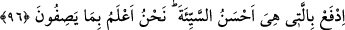
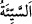
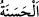

94. Bu durumda beni zalimler topluluğunun içinde bulundurma Rabbim!”
“Bu durumda beni zâlimler topluluğunun içinde” azabda beni onlara yakın
“bulundurma Rabbim!” Beni onların arasından sâlimen çıkar. Burada zulümden murad
şirktir.
Âyette onların tehdid edildiği azabın çok korkunç olduğu ve neredeyse kendisine
isâbet etmesi mümkün olmayan kimsenin bile ondan sığınması gerektiği
bildirilmektedir. Onların azâbı inkâr etmesi ve alay yoluyla onu acele istemeleri
reddedilmektedir. Bu, belânın bazen dostları da içine alacağına delâlet etmektedir. Hak
Teâlâ dilediğini yapar. İyi bir kimseye azab edecek olsa bu O’ndan bir zulüm ve çirkin
bir fiil olmaz.
95. Biz, onlara yönelttiğimiz tehdidi sana göstermeye elbette ki kadiriz.
“Biz, onlara yönelttiğimiz tehdidi” azâbı “sana göstermeye elbette ki kadiriz.” Fakat
biz onlardan bâzısının veya soylarından gelecekleri bir kısmının iman edeceklerini
bildiğimizden o azâbı geciktiririz. Ya da sen onların içinde olduğun halde biz onlara
azab etmeyiz.
96. Sen, kötülüğü en güzel bir tutumla sav. Biz onların yakıştırmakta oldukları
şeyi çok iyi bilmekteyiz.
“Sen, kötülüğü” onlardan sana gelen eziyet ve fena muâmeleleri “en güzel bir
tutumla” en güzel uzaklaştırma yollarından hilm ve bağışlama yoluyla “sav.” “
(kötülük)” çirkin fiildir, “
(iyilik)”nin zıddıdır.
Bâzıları der ki: “Sen onlara sana bahşettiğimiz üstün ahlâk, şefkat ve rahmet ile
muâmele et. Çünkü onların senin hakkında ortaya koydukları türlü muhâlefetler sana
ulaşıp tesir edemeyecek kadar önemli ve değerlisin.
et-Te’vîlâtü’n-Necmiyye’de der ki: “Yâni kötülüğe karşılık vermek câizdir. Fakat
affetmek daha güzeldir. ‘Cefâyı vefâ ile önle.’ denir. Yine ‘En güzel olan kalbin
affetmeye işâret ettiği şeydir. Kötülük ise nefsin karşılık vermeye çağırdığı şeydir.’ diye
söylenir.”
Denilir ki: “Yaratılmışların zulmetini, karanlığını hakikat nuru ile def’et. Ya da kendi